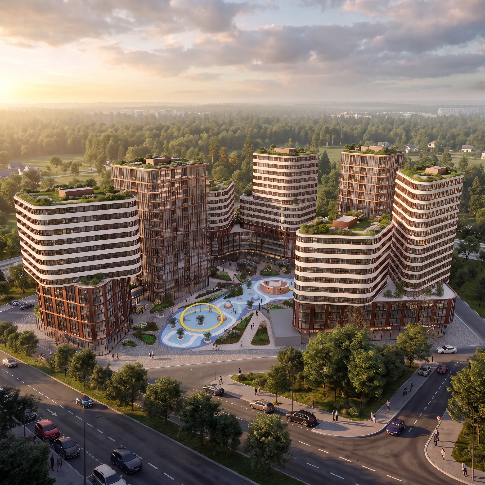
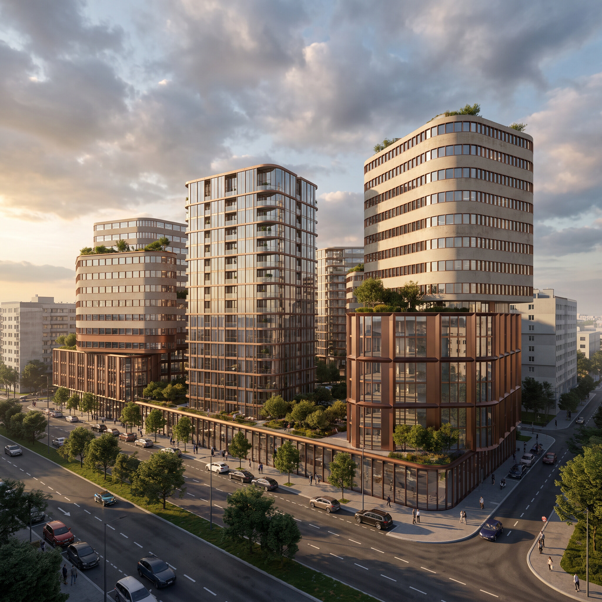
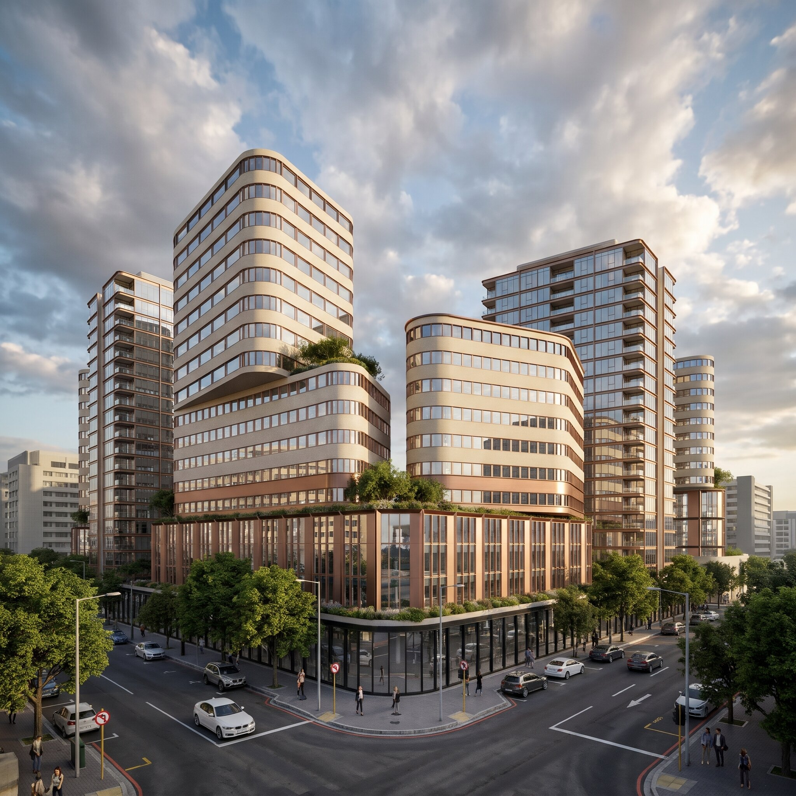

Город внутри — природа вокруг: замкнутый зелёный двор без машин, бронзовый стилевой код ансамбля и лес на горизонте, который остаётся постоянным фоном жизни.
Свободное концепт-исследование жилой среды — без привязки к конкретному участку. Такой формат показывает девелоперу, как я думаю о продукте: от гипотезы до образа ансамбля, ещё до старта проектирования. Каждое решение здесь подчинено одному вопросу: что делает комплекс узнаваемым и удобным для жизни.
Город внутри — природа вокруг. Двор — сердце комплекса: жизнь концентрируется вокруг зелёного двора без машин, а лесополоса на горизонте остаётся постоянным фоном — из окон, с улицы и из самого двора. Так комплекс получает два опорных образа сразу: защищённый внутренний мир и открытость природе.

Ансамбль построен на иерархии объёмов. Главные башни несут стилевой код комплекса: криволинейные объёмы, горизонтальный ритм окон и бронзовые рамы, которые держат теплоту фасада. Второстепенные объёмы — стеклянные башни с тонкими рамами в той же бронзовой гамме: они поддерживают ансамбль, не споря с ним. Озеленённые кровли продолжают двор вверх и работают на образ «природы в городе».


Двор без машин — сплошное общественное пространство. Игровое поле с рисунком мощения собирает детскую активность, жёлтое кольцо работает как точка притяжения и ориентир двора. Зелёные карманы и взрослые деревья по периметру отделяют двор от улицы и сохраняют ощущение «жизни внутри природы».
Концепция зафиксирована в образе и гипотезе продукта. Следующий шаг — привязка к конкретному участку: подстройка высот, входных групп и машиномест под реальный контекст, затем — эскизный проект. Как этот путь выглядит на практике — в кейсах: от эскизного проекта в Первоуральске (кейс) до стройки на «Невском» (кейс).